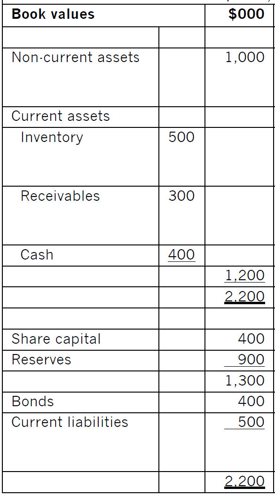
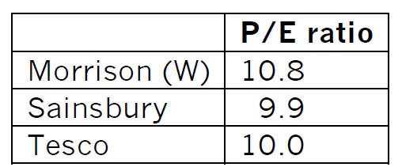
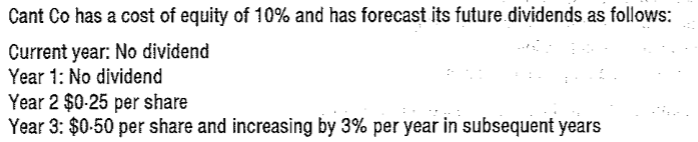
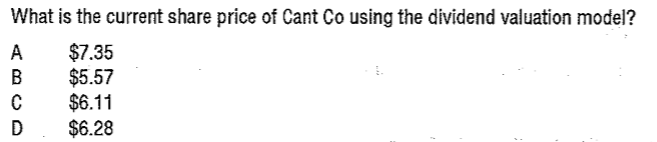

2.1 Asset-based Valuation Models
The value of the equity of the business is estimated as the value of its net assets.
Net assets = total assets - intangible assets-all liabilities
The value of a share = net assets / the number of shares
Note: Intangible assets such as goodwill are ignored.
There are three ways of valuing its assets: book values, net realizable values and replacement values.
(1) Balance Sheet (book) Value
The book values of assets are often based on historical costs. Net asset value of non-current assets depends on depreciation policy. So, the book value approach is practically useless.
(2) Net Realizable Values
This method adjusts the book value of the assets to reflect their market value. This represents what should be left for shareholders if the assets were sold off and the liabilities settled.
It may represent the minimum price acceptable to the present owner of the business as it ignores unrecorded assets (e.g. internally generated goodwill)
(3) Replacement Cost
Net replacement cost can be viewed as the cost of setting up an identical business "from scratch".
This may represent the maximum price a buyer might be prepared to pay.
So, of the three approaches, net realizable value is likely to be the most useful because it presents the sellers with the lowest value they should accept.
Comments of the Asset-based Approach
Asset-based method ignores the value of intangible assets (such as reputation, brands, knowledge, goodwill etc.) and the value of future profits. This method is especially limited in their use in valuing companies which operate with a low tangible asset base, such as accountancy practice.
This method provides a floor value for a business that is up for sale.
Example 1
Non-current assets contain land and buildings that are valued $700,000 above their book value, and plant and machinery, which would sell for $200,000 less than their book value. Inventory would sell for $400,000 and only $250,000 would be realized from receivables. Closure costs would add $100,000 to liabilities.
What is the minimum amount that the shareholders should accept for this business?

2.2 Income-based Valuation Methods
1. Price/Earnings Ratio
The P/E ratio of a quoted company takes into account the expected growth rate of that company (i.e. it reflects the market’s expectations for the business).
Using published P/E ratios as a basis for valuing unquoted companies may indicate an acceptable price to the seller of the shares.
P/E ratio = \(\frac{market\ price\ per\ share}{earnings\ per\ share}\)
EPS = \(\frac{(profit\ for\ the\ year\ - \ preference\ dividends)}{number\ of\ ordinary\ shares}\)
Therefore:
Market price per share = P/E ratio * earnings per share
Value of total equity = P/E ratio * (\(profit\ for\ the\ year\ - \ preference\ dividends)\)
This can be used to value the shares in an unquoted company as follows:
Step 1 Select the P/E ratio of a similar quoted company
Step 2 Adjust downwards (usually 1/3 – 1/2) to reflect the additional risk of unquoted and non-marketability of unquoted shares
Step 3 Determine the maintainable earnings for the unquoted company’s EPS
Step 4 value of a share = EPS * appropriated P/E ratio (unquoted company)
Lecture Example 2
Estimating the value of a small chain of UK-based grocery shops using P/E ratio method. The company has just enjoyed post tax earnings of $200,000, out of which it paid a dividend of $50,000.
The following information of three large UK quoted supermarket chains (Morrison (W), Sainsbury and Tesco) on 24 December 2011 are:

Comments on P/E Ratio Method
This method reflects the earnings potential of a company. However, as minority shareholders typically have limited influence to affect earnings, so, valuation based on earnings is less relevant for purchases of minority shareholdings, it is particularly appropriate for purchase of majority stakes.
Problems with P/E ratio method:
It’s very difficult to find a suitable "proxy" (i.e. a listed company very similar to the unquoted one).
Accounting earnings are more subjective than cash flows – Accounting earnings are affected by non-cash items (e.g. depreciation expense) and accounting policy choices.
Earnings manipulation – The earnings of the unquoted company may be intentionally inflated and may not represent future earnings fairly. Information asymmetry means the seller will know more about the company than the buyer.
Historical data – The P/E ratio is often based on historical earnings, which may not reflect earnings potential.
Loss-making companies – If the unquoted company is loss-making, the P/E ratio method results in a (meaningless) negative value for its equity.
2. Earnings Yield Method
Earnings yield it simply the reciprocal of the P/E ratio method (and therefore has similar problems and weaknesses).
Earning Yield (EY) = \(\frac{EPS}{market\ price\ per\ share}\) * 100
Therefore:
Share price = \(\frac{EPS}{earnings\ yield}\)
2.3 Cash Flow-based Valuation Methods
1. Dividend Valuation Model
The market value of a share equals to the present value of future dividends shareholder received.
If dividends are forecast to grow at a constant annual rate to perpetuity, the valuation formula is:
\[P_{0} = \frac{D_{0}(1 + g)}{k_{e} - g}\]
Where:
P0 = ex-div share price at time 0
D0 = current dividend at time 0
g = annual growth rate of dividend
\(k_{e}\) = shareholder’s required rate of return (cost of equity)
\(D_{0}(1 + g)\ \)is dividend in one year
The DVM can be applied to the valuation of shares as follows:
Step 1 Identify the current dividend
Step 2 Estimate the growth rate of dividends (covered in part E).
-assume the historical growth rate will apply into the future;
-Gordon’s growth approximation
Step 3 Determine the required return using the DVM or CAPM (covered in part E).
Step 4 using the DVM formula.
Example 3
Information of company A: Dividend/share just paid = $0.12, Historical dividend growth rate = 5%/year. This is expected to be maintained in the future.
Information of a suitable listed company (same business and same gearing):
- Share price = $2.40
- Dividend just paid = $0.22
- Historical dividend growth rate = 10%/year. This is expected to be maintained in the future.
What is the share value of the unlisted company A?
Comments of DVM
As an investor with control can change the dividend policy, so this method is suitable for valuing a minority shareholding.
weaknesses:
Simplifying assumptions – The constant growth rate assumption for dividends may not hold true for many companies in the long run, leading to inaccurate valuations.
Dependence on dividends – The DVM is less applicable to a company that does not pay dividends or pays inconsistent dividends. This limitation is particularly relevant for growth-oriented or non-dividend-paying companies.
Sensitivity – The valuation is highly sensitive to the choice of the required rate of return.
Shareholder influence – It has less relevance for valuing a majority shareholding.
Example 4 (March 2016)


2. Discounted Cash Flow Basis
A business can be viewed as a combination of its underlying projects. Just as the value of an individual project equals the present value of its future cash flows, the total value of the business should also equal the present value of the company’s cash flows.
Two Application Approaches of DCF Methods
Approach 1
Estimating cash flows generated by the company, and cash flows are after-interest and after-tax (representing cash flows to ordinary shareholders)
Discounting cash flows at the cost of equity to calculated the MV of equity
Approach 2
estimating cash flows generated by the company and cash flows are before-interest and after-tax (representing cash flows to all investors)
discounting cash flows at the WACC to calculate the MV of the company
MV of equity= Company value—Market value of debts
Comments on DCF Basis
This method is suitable for value majority shareholdings. Theoretically, it is the best valuation model as it considers the intrinsic value of a business based on its expected future cash flows and allows for the time value of money, and incorporate synergies.
Although it enables a more precise assessment of a company’s worth, it still has problems and weaknesses:
Estimation challenges – Estimating future cash flows and determining an appropriate discount rate can be complex and uncertain, especially for long-term forecasts.
Sensitivity to assumptions – Small changes in assumptions about future cash flows and discount rates can lead to significantly different valuations.
Unpredictable cash flow – A DCF-based valuation may be unsuitable for startups or high-growth companies with unpredictable cash flows.
Example 5
D company wishes to make a bid for TED. TED makes after-tax profits of $40,000 a year. D believes that if further money is spent on additional investments, the after-tax and interest cash flows could be as follows.
| Cash flow |
(100,000) |
(80,000) |
60,000 |
100,000 |
150,000 |
150,000 |
The cost of equity of TED is 15% and the company expects all its investments to payback, in discounted terms, within five years.
(1) What is the maximum price that the company should be willing to pay for shares of TED?
(2) What is the maximum price that the company should be willing to pay for shares of TED if it decides to value the business on the basis of cash flows in perpetuity, and annual cash flows from year 6 onwards are expected to be $120,000?
2.4 Financial Market Efficiency
1. Types of Efficiency
There are three types of efficiency can be distinguished in the context of the operation of financial markets.
(1) Allocative efficiency
Does the market attract funds to the best companies?
(2) Operational efficiency
Does the market have low transaction costs and a convenient trading platform?
(3) Information processing efficiency
Do share price quickly and accurately reflect all known information about the company?
2. The Efficient Market Hypothesis
The efficient market hypothesis considers information processing efficiency.
Three potential levels of information processing efficiency
(1) Weak-form Efficiency
Share prices fully and fairly reflect all the information contained in the record of past share prices. Share prices will follow a random walk by responding to new information as it becomes available.
In a weak-form efficiency market, it should not be possible to forecast price movements by reference to past trends. This means Chartism or technical analysis should not be able to outperform the market consistently. On the other hand, fundamental analysis would be able to predict future share price movements.
Technical analysis attempt to predict share price movements by assuming that past price patterns will be repeated.
Fundamental analysis evaluate shares by studying everything from the overall economy and industry conditions to the financial strength and management of individual companies.
Random walk - Share price will have an intrinsic or fundamental value, but this value will be altered as new information becomes available, so the actual share price on any given day will fluctuate in an unpredictable (random) way around the intrinsic value.
(2) Semi-strong Form Efficiency
Share prices reflect all historical and publicly available information. Share prices respond quickly and accurately to new information as it becomes publicly available.
In semi-strong market, Individuals cannot beat the market by analyzing public information as these already be reflected in share prices. And price movements can only be forecast using inside information. This is known as insider trading.
(3) Strong Form Efficiency
Share prices reflect all information, including past, public and private information.
If the stock market is strong-form efficiency, shares prices will respond to new development and events before they even become public knowledge, and gains through insider dealing are impossible as the market already knows everything.
Major markets (e.g. the London and New York Stock Exchanges), have strict rules to prohibit insider dealing. Therefore, such markets are regarded as semi-strong efficient.
The three forms of efficiency describe how share prices react to information from the company. If prices do not react to new information, there is no efficiency at all.
Implications for the Financial Manager
The level of efficiency of the stock market has implications for financial managers:
Timing of new issues: unless the market is fully efficient, the timing of new issues remains important. This is because the market does not reflect all the relevant information. Therefore, an advantage could be obtained by issuing shares just before or after additional information becomes available to the market.
Project evaluation: if the market is not fully efficient, the share price is not fair; therefore, the rate of return required from that company by the market cannot be accurately known. If this is the case, it is not easy to decide what rate of return to use to evaluate new projects.
Creative accounting: unless a market is fully efficient, creative accounting can still be used to mislead investors.
Mergers and takeovers: where a market is fully efficient, the price of all shares is fair. Therefore, if a company is taken over at its current share value, the purchaser cannot hope to make any gain unless economies can be made through scale or rationalization when operations are merged. Unless these economies are significant, an acquirer should not be willing to pay a substantial premium over the current share price.
Validity of current market price: the share price is fair if the market is fully efficient. In other words, an investor receives an appropriate risk/return combination for his investment, and the company can raise funds at a reasonable cost. If this is the case, there should be no need to discount new issues to attract investors.
The Paradox of Efficient Markets
Market efficiency relies on investors actively buying/selling shares to create a liquid market where fair prices emerge. Investors will actively trade shares if they believe that bargains are available (a signal to buy) and other shares are overvalued (a signal to sell).
However, if the market is efficient, such mispriced shares will not exist. This is the paradox of efficient markets – investors must believe that the market is inefficient so that it becomes efficient.
2.5 Practical Factors in Business Valuation
(1) Marketability and liquidity
The lack of marketability of shares in unquoted companies will reduce their value relative to shares in quoted companies. So, the P/E ratio of a comparable quoted company usually would be adjusted downwards by as much as 40% when valuing unquoted shares.
(2) information sources and availability
There is much less information may be available for unquoted companies because they may not be required to publish accounts and are also unlikely to be watched by analysts or news agencies. This asymmetry of information between managers and potential investors in unquoted companies may lead to investors potentially undervaluing the shares.
(3)Market imperfections and pricing anomalies（反常现象）
the DVM is based on perfect market assumptions. However, markets are not perfect markets, as evidenced by the following:
-overreaction effect: share prices overreact to unexpectedly good/bad news initially, then slowly move back toward their fundamental value.
- calendar effects: such as share price often falling at particular times of this week (eg Monday morning) and high returns often occurring in particular months.
(4) Market capitalization
Market capitalization = the number of issued ordinary shares × market price per share
However, market capitalization is not necessarily the amount that would have to be paid for the company’s entire equity. The quoted share price is for a minority shareholding. A significant premium would usually have to be paid if control is required.
On the other hand, there may be situations where the entire capital can be acquired at below-market capitalization (e.g. a small group of people holds a large proportion of the target company’s shares). If the existing investors tried to dispose of their holdings via the market, they may be willing to sell "off exchange" at a small discount to the current quoted price.
(5) behavioral finance
Behavioral finance attempts to explain how decision makers take financial decisions in real life, and why their decisions might not appear rational and have unpredictable consequences. This contrasts many traditional theories, which assume investors make rational decisions.
Herding or herd mentality may be explained by:
the desire to conform and not to act differently from others (e.g. fund managers tend to follow each other’s strategies);
individual investors, lacking confidence, believe that a large group of other investors cannot be wrong.
If many investors follow a herd instinct to buy shares in a certain sector, a significant price rise for shares in that sector can lead to a stock market bubble.
Noise traders – are investors who do not base buy/sell decisions on rational analysis (i.e. without using fundamental data about the company’s performance). Noise traders generally have poor timing, follow trends and overreact to good and bad news.
Loss aversion means that some investors:
avoid investments with the risk of making losses, even though expected value analysis suggests that, in the long term, they will make significant capital gains;
prefer to invest in companies that look likely to make stable but low profits rather than those that may generate higher profits in some years but possibly losses in others.
The “momentum effect" in stock markets can create optimism (e.g. investors believe a trend in price rises will continue), which increases willingness to invest in companies that show prospects for growth. If a momentum effect exists, it will likely lengthen a stock market boom (or bust) period.
An overconfident investor tends to believe that they are better and more able than they are. This excessive confidence can cause the investor to be reckless and make mistakes.
Therefore, individuals may not make decisions based on a rational analysis of all available information. This could lead to prices for an individual company and the market being valued either very high or very low.
example 7
WC company announces that it decided yesterday to invest in a new project with a huge positive NPV. The share price doubled yesterday.
What does this appear to be evidence of?
A a semi-strong form efficient market
B a strong form efficient market
C technical analysis
D a weak form efficient market
Example 8
Sarah decides to plot past share price movements to help spot patterns and create an investment strategy. What does Sarah believe the stock market is?
( ) completely inefficient
( ) weak form efficient
( ) semi-strong form efficient
( ) strong form efficient
Example 9
In relation to capital markets, which of the following statements is true?
A. The return from investing in larger companies has been shown to be greater than the average return from all companies
B. Weak form efficiency arises when investors tend not to make rational investment decisions
C. Allocative efficiency means that transaction costs are kept to a minimum
D. Research has shown that, over time, share price appear to follow a random walk
Example 10-2014 dec
An investor believes that they can make abnormal returns by studying past share price movements.
In terms of capital market efficiency, to which of the following does the investor’s belief relate?
A Fundamental analysis
B Operational efficiency
C Technical analysis
D Semi-strong form efficiency